← トップページに戻る
使い方ガイド
🚀 基本的な使い方
ホーム画面
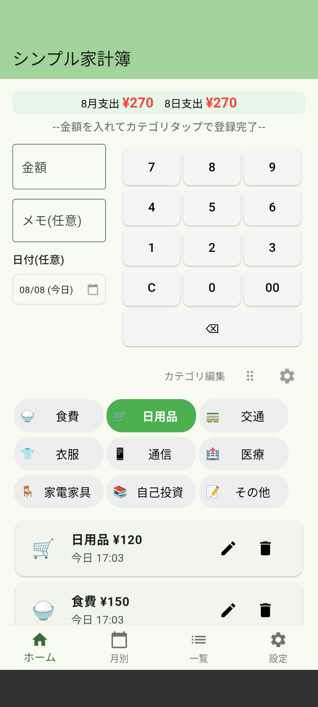
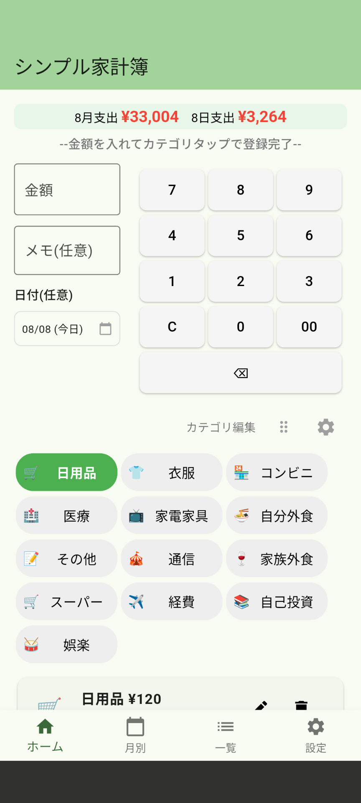
左：デフォルト状態 右：カスタマイズ後
カテゴリのカスタマイズ
ホーム画面では、カテゴリを自分好みにカスタマイズできます：
- カテゴリの並び替え：右上の⋮⋮（6つの点）アイコンをタップしてロックを解除し、カテゴリをドラッグして位置を変更できます
- カテゴリの編集・追加・削除：右上の⚙️（設定）アイコンをタップして「カテゴリを編集」から、新しいカテゴリの追加や既存カテゴリの編集・削除ができます
💡 便利な使い方
よく使うカテゴリを上の方に配置することで、より素早く記録できるようになります。
支出の記録方法
1
金額を入力
ホーム画面の金額欄に支出額を入力します。数字キーパッドを使って簡単に入力できます。
2
カテゴリを選択
食費、交通費、娯楽など、該当するカテゴリのアイコンをタップします。
3
完了！
カテゴリをタップすると自動的に記録されます。メモや日付は必要に応じて入力できます。
💡 コツ
「金額を入れてカテゴリタップで登録完了！」が基本操作です。
📅 カレンダー機能
シンプル支出記録アプリの便利なカレンダー機能では、いつどれだけお金を使ったかが一目でわかります。
1000円以下が青、2000円以下が黄色、一万円以下が緑、それ以上が赤で表示されます。
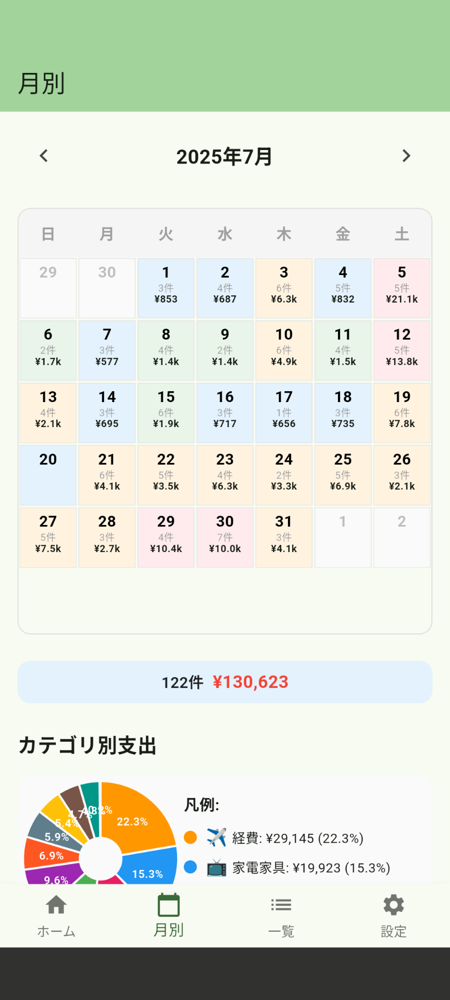
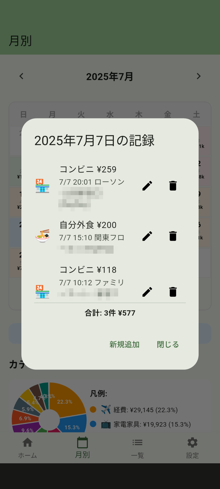
左：支出記録時の日付選択 右：カレンダーでの支出確認
カレンダーでできること
- 支出状況の一覧表示：各日付に支出金額が表示され、月全体の支出パターンが分かります
- 詳細内容の確認：日付をタップすると、その日の支出詳細を確認できます
- 過去日付での記録追加：忘れていた支出を過去の日付で記録できます
- 視覚的な支出管理：支出の多い日、少ない日が色や金額で一目瞭然
💡 活用方法
月末にカレンダーを見返すことで、無駄遣いしやすい日や節約できた日のパターンを把握できます。
📊 カテゴリ別支出分析
円チャートで月別のカテゴリごとの支出割合を視覚的に確認できます。どのカテゴリにお金を使っているかが一目瞭然です。
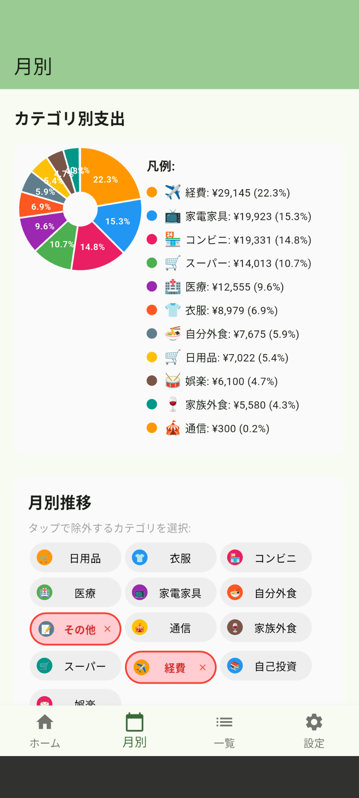
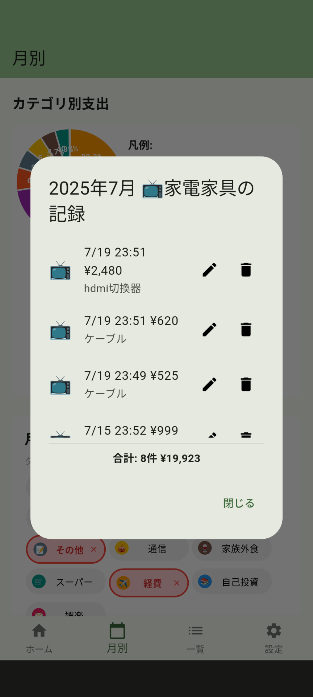
左：カテゴリ別支出円チャート 右：凡例選択でのポップアップ表示
円チャートの便利機能
- 視覚的な支出把握：円チャートで各カテゴリの支出割合が一目で分かります
- 詳細内訳の確認：凡例をタップするとポップアップが表示され、該当カテゴリの詳細を確認できます
- データの修正・追加：ポップアップから直接、支出記録の修正や新しい記録の追加が可能です
- カテゴリ比較：複数のカテゴリを比較して、支出バランスを把握できます
💡 活用方法
円チャートを見ることで「今月は食費が多すぎる」「交通費を節約できている」など、支出の傾向を素早く把握できます。
📈 データの確認
月別推移の確認
画面下部の「月別」タブから、毎月の支出推移をグラフで確認できます。
会社経費など、除外したい項目をタップで選ぶことができます。
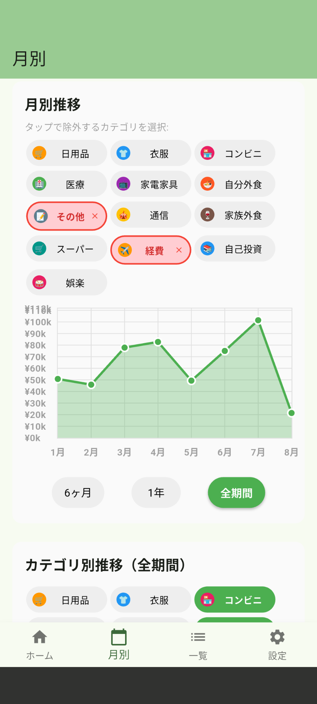
プレミアム機能
より詳細な分析機能をご利用いただけます：
- 月別推移グラフ
- カテゴリ別推移グラフ
- 高度な統計情報
表示したいカテゴリを選んで、月別の推移を見ることができます。
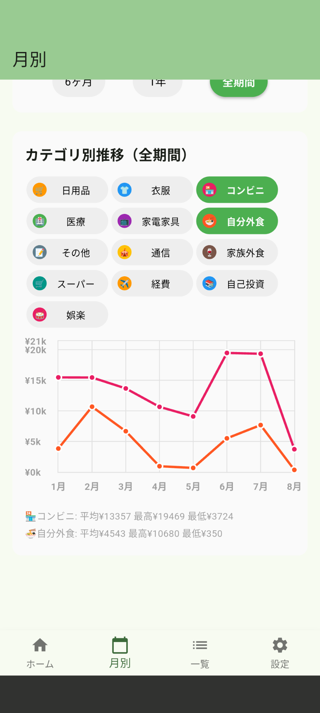
支出履歴の確認
「一覧」タブから過去の支出記録を時系列で確認できます。各記録の編集・削除も可能です。
検索やカテゴリ選択で抽出したアイテムを、一括してカテゴリを変更することもできます。
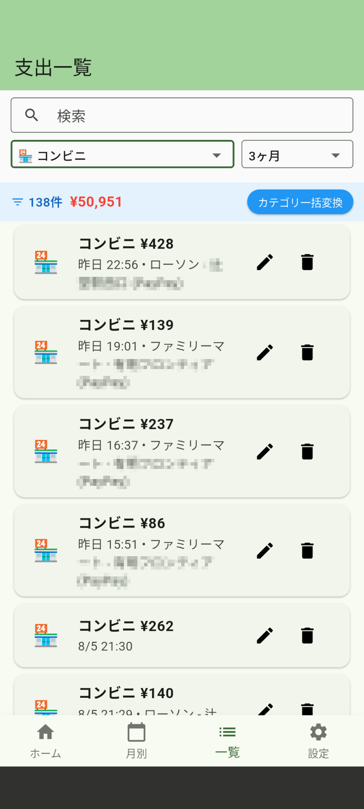
⚙️ カテゴリの管理
カテゴリの追加・編集
- 「設定」タブをタップ
- 「カテゴリを編集」を選択
- 新しいカテゴリの追加や既存カテゴリの編集が可能
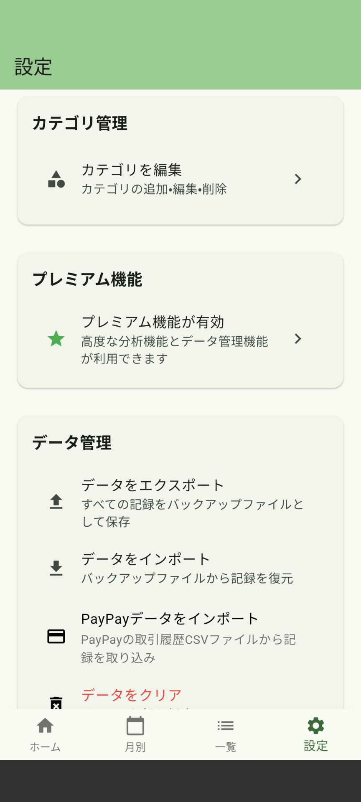
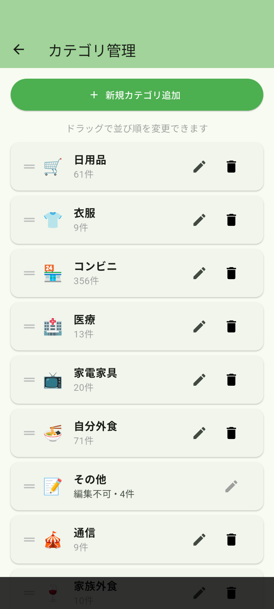
左：設定画面 右：カテゴリ管理画面
絵文字の選択
カテゴリには豊富な絵文字から好きなものを選択できます。
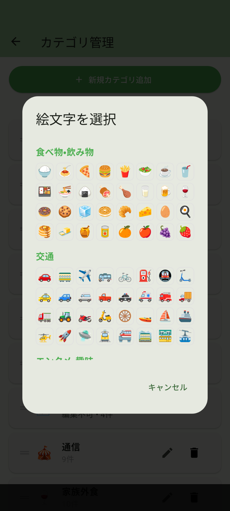
カテゴリの並び替え
- ホーム画面右上の並び替えアイコンをタップ
- ロックを解除
- カテゴリアイコンをドラッグして並び替え
💾 データの管理
バックアップの作成
プレミアム機能
- 「設定」→「データをエクスポート」
- 保存先を選択
- バックアップファイル（JSON形式）が作成されます
データの復元
プレミアム機能
- 「設定」→「データをインポート」
- バックアップファイルを選択
- データが復元されます（重複は自動でスキップ）
PayPayデータの取り込み
プレミアム機能
PayPayの取引履歴CSVファイルから支出記録を自動取り込みできます。
- PayPayアプリから取引履歴をCSVでエクスポート
- 「設定」→「PayPayデータをインポート」
- CSVファイルを選択して取り込み
自動取り込みしたアイテムは自動でカテゴリが振り分けられます。
判定ができないものは「その他」に振り分けられます。
修正が必要な場合には、一覧画面の「カテゴリ一括変換」機能が便利です。
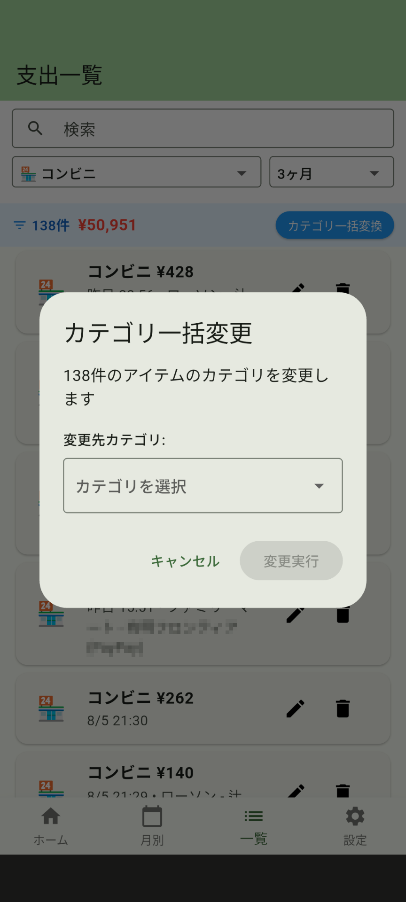
PayPayデータ取り込み時のカテゴリ一括変換機能
🔧 その他の便利機能
画面の向き
アプリは縦向き固定で、片手での操作に最適化されています。
データの安全性
すべてのデータはお客様のデバイス内にのみ保存され、外部サーバーには送信されません。